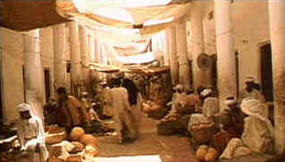

|
Arabian
Nights/C+,C+ |
|
Image/1974/131m/WS
1.75 |
Pier Paulo Pasolini continues his
homoerotic explorations on the screen by taking his sexual slant into the Arabian
Nights. Hungry lovers lurk behind every palm tree and the parched desert thirsts are
satisfied only between the silken sheets of lustful tales of the night.
While it seems like all the tales will be interconnected at the
beginning, the script seems to wander in the desert, losing its way. One tale involves a
slave girl who slips a young man the money to buy her at auction so they can enjoy carnal
bliss. After a pointed warning from her, he sells a shawl in the market to a blue-eyed
man, which results in her abduction and sends him on a lackluster search to recover his
lost love. In another tale a bridegroom abandons his wife to be on the eve of their
wedding for another mysterious woman. His betrayal can only come back to haunt him.
Several other stories weave together the fabric of Pasolini’s vision. With a running
time of 131 minutes, the film unfolds rather slowly despite the multiple stories.
 |
Pasolini envisions the Arab bazaar
©Image |
There’s a
sense of crudeness to the way Pasolini chooses to shoot. Simple panning shots set the
landscape, tight close-ups are used extensively on the actors. The camera becomes very
intimate with actors, almost invigorating the sense of carnality. Thus, the crudeness in
the simplicity gives way to elegance. The production design by Dante Ferretti makes the
most of the locales and Ennio Morricone’s score carries the characters along on
Arabian chords.
Pasolini is not for all tastes. His depictions of sex are
casually graphic and his actors do not always seem to be top professionals. Perhaps
it’s his naturalistic way of directing. Perhaps he is searching for something closer
to the period by a certain awkwardness in his actors. For my part, I found it somewhat
disconcerting.
There is a commendable disclaimer on the back of the DVD package
indicating that the film elements are the best available but are not up to modern
standards. For the most part the images are pretty clean. The color is either badly faded
or Pasolini has chosen to film in distinctly earth tones, which is certainly possible.
Pasolini has a rough, cinema-verite shooting style, despite the ancient settings of his
movies. It’s reflected in the grainy look of the film, but I did not find it
distracting or even unattractive. There are a number of scenes that are somewhat soft,
perhaps owing to some digital cleaning. The sound is thin but oriental flavor of the Ennio
Morricone score is still enjoyable. The film is presented with serviceable white,
non-removable English subtitles over the print. |
The
Feature
Archive has articles ranging
from John
Ford to Blonde
Bimbos, The
Heistmasters, Akira
Kurosawa and Frank
Darabont.

Click on the image above to for a view of Hollywood's great
dance musicals. Astaire, Kelly, Rogers and more....
Check out the Movie
Poster Archive
for short bios and images of Susan Hayward, Kirk Douglas, Katharine
Hepburn and many more. This month's featured star is Clark
Gable.

Imaging
Science Foundation
promotes proper standards in home theater viewing. ISF trained
technicians offer monitor calibration services to consumers. The
difference in a properly calibrated monitor can be astounding.
Click on the image to find an ISF member near you.
Home
Theater Reference Reviewing System
When you read a DVD review it's of utmost importance to know what
equipment is being used to evaluate quality. Click on the projectors
to find out more.
HOT
LINKS
DVD
Verdict
They may
be judgmental, but that's the point, isn't it. Lots of DVD reviews
plus news and more
The
Home Theater Forum
Looking for
lively and helpful exchanges on home theater, DVD, movies. Visit
this friendly site and get a hardy welcome.
|